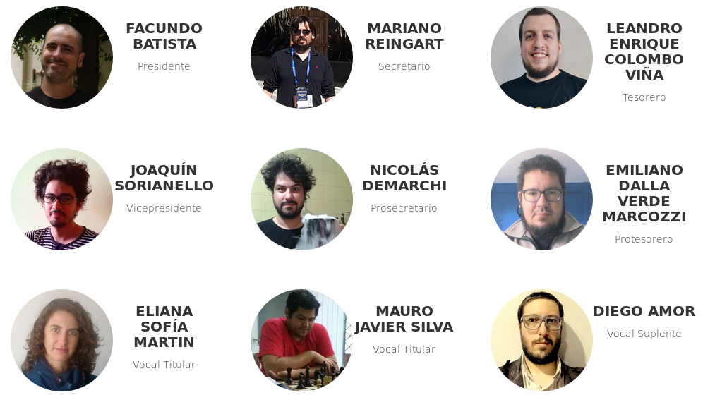

http://bit.ly/pyar20180315
Una pequeña historia...
- En el origen… no había PyAr
- Se hizo la luz (?)
- Casi se muere
- Pero anduvo
- Empezamos a crecer
- Hola!
¿Listo?
- Más de una década después
- Muchos problemas resueltos
- ¿Si? ¿Seguro?
- ...
- Aparecieron otro problemas:
- Escala en eventos
- Infraestructura estable
- Nuevos desafíos
¿Entonces?
- Después de mucho debate... surge la AC
- Una interfaz
- Una herramienta
Herramienta/Interfaz

Primera CD
Próximos pasos
- Acercar a la gente
- Becas, especialmente en eventos chicos
- Capacitación en Python
- Descuentos en cursos
- Armar/coordinar cursos
- Infraestructura
- Virtual (sitio web, cartelera de trabajo, ...)
- Real (routers, micrófonos, ...)
Te necesitamos

Categorías
- Activos (Voz, Voto, Elegible para la CD): $200/mes
- Adherente (Voz): $75/mes
- Estudiante: $25/mes c/certificado
- Completá el formulario!
Benefactores

- Empresas, instituciones, etc.
- Socia benefactora
- Beneficios directos
https://ac.python.org.ar/
presidencia@ac.python.org.ar
http://bit.ly/socio-pyar